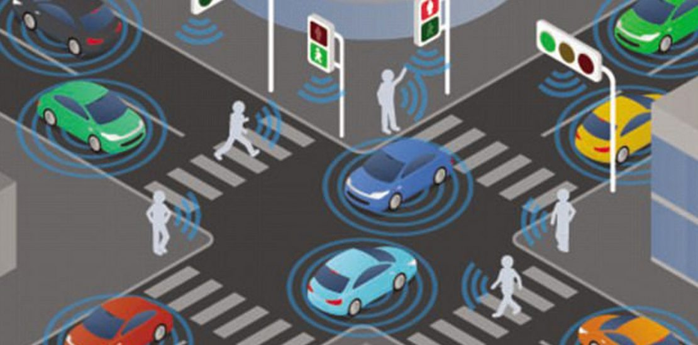

AI in Transport
How could AI be applied in our public infrastructures and how can it affect us?


AI solutions are starting to weave their way into our transport infrastructures: Clearway, an AI traffic monitoring and surveillance system, Parquery, an AI-powered parking management service, path planners and general AI simulations designed to predict how events could affect traffic.
Such is the interest in this area that there was a call earlier this year by the US Department of Transport for AI opportunities and challenges related to implementing AI solutions in transport infrastructure.
There are multiple ideas that might be floating in your mind regarding the opportunities available to us with the use of AI, such as intersection management, recognition of dangerous driving and multimodal journey planners for pedestrians.
On the intersection management, you could imagine an AI that sees how heavy traffic is for an intersection and how many pedestrians are waiting to cross the road with the added context of nearby events that could be causing (or will be causing) traffic. A solution like this could make better informed decisions on managing the traffic for that intersection while keeping in mind how it might affect neighbouring crossroads.
You could also think about how a pedestrian might get better journeys and paths planned for them with an AI system that holds that traffic knowledge as well as the person's general accessibility and preference/comfort towards different modes of transport.
However, there are challenges to consider when implementing any kind of technology into our infrastructure, especially when it comes to AI and all of its concerns and drawbacks (hallucinations, data privacy, etc).
First and foremost, trust. Users need to trust the infrastructure before they use it. There are many facets to trust: understanding and accepting the data that an AI is using to make decisions with, understanding why an AI has made that decision, knowing that the AI was trained on data that was collected ethically, etc. I can talk to great lengths about AI trust and assurance because it's something we're working on at Cambridge Consultants, but I don't want to go on a tangent! I may write about it in a future blog post :)
Another challenge is centred around cybersecurity. These AI systems, like all computational machines, would be susceptible to cyber-attacks which in a case like this could cause grave harm to people (hacking traffic lights, speed limits, etc.), expose people (making it easier to stalk cars or pedestrians) and even obtain critical infrastructure information to be used in nefarious ways like terrorism attacks.
Finally, these systems need to be planned for and implemented in a cohesive way as a whole rather than having localised improvements over time. There are two reasons for this, (1) an AI system like this would provide more benefit as a whole than as a simple sum of its parts and (2) we might risk overdeveloping the more affluent areas and letting the more impoverished areas fall further behind in infrastructure.
To summarise, AI solutions could be significant to the achievement of safer, greener mobility for all, but there are a lot of concerns and challenges to address before these systems become amenable and acceptable in society.
What do you - the reader - think? Are there any further concerns this article has failed to address? Is legislation/government/etc dealing with this development properly and effectively? What should be different?